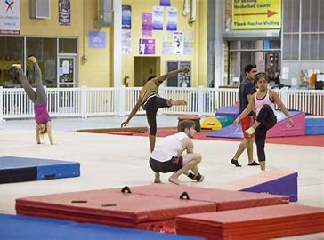
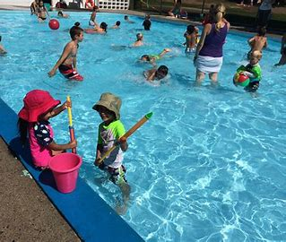

Youth, children, and Parents can now participate in our fitness program which includes core strengthening activities, stretching, games focused on exercise and more!.
Explore our world and share yours!.
Sign up and create meaningful experiences in our heartwarming community today!.
We would love to connect with new parents and children around the way.
Please check out our home page to tell you more about our programs.
Visit our contact page for details on how to contact us for more information.
Parents Care is uniquely and intentionally designed for early childhood development. Our teachers support you and your child as you spend uninterrupted time together, creating a safe space to play, explore and learn. Play is a fundamental component of early childhood education, and is the cornerstone of every one of our programs.
Physical activity guidelines for toddlers recommend that each day they:
- get at least 30 minutes of structured
(adult-led) physical activity
- get at least 60 minutes of unstructured
(active free play) physical activity
- not be inactive for more than 1 hour at a time
except when sleeping
- We provide proprietary equipment designed to create challenges that inspire learning.
- We support building self-esteem and encourage communication skills.
- Take classes that prioritize building the union of the Spirit, Mind, and Body.
Core Strengthening
Core for babies and toddlers
Gross motor and fine motor development starts with good core strength. It's a very important foundation for kids.
Babies start developing core strength when they play on the floor. Floor time gives opportunities for rolling, lying on the side, and reaching for those little toes! Tummy time strengthens muscles for sitting and for fine motor development in the arms and hands.
Older babies and toddlers develop good core strength with continued floor play, side sitting, and crawling. As they get bigger, they climb and move around all over, inside and outside.
Toddlers and preschoolers learn to move their body on uneven surfaces, small bikes, and on climbing structures. They are successful on playground equipment and swings.
Core for teens
Strength training (also called resistance training) is a way to build muscles and strength using free weights, kettlebells, weight machines, resistance bands, or a person's own weight. Teens may want to strength train to improve sports performance, treat or prevent injuries, or improve appearance.
People who work out with weights can use:
free weights, including barbells, dumbbells, and kettlebells. Free weights are portable and inexpensive, but it might take some practice to learn good technique.
weight machines, which make it easier to follow good technique, but you may have to go to a gym or weight room to use them.
People can also use resistance bands and even their own body weight (as in push-ups, sit-ups, planks, and squats) for strength training.
If you haven't started puberty, strength training will help you get stronger but your muscles won't get bigger. After puberty, the male hormone testosterone helps build muscle in response to weight training. Because guys have more testosterone than girls do, they get bigger muscles.
Core for adults
Core muscles in the abdomen include the long rectus abdominis muscles in the front; the external and internal obliques on the sides; and a wide, flat girdle in front called the transversus abdominis.
In your back, a group of muscles called the erector spinae help you stand up tall. The gluteal muscles in the buttocks help you extend your leg, push off from a starting point, walk, and climb stairs.
And in the pelvis area, the iliacus and the psoas muscles enable you to lift your legs and remain stable while standing; and the quadratus lumborum, a long muscle on each side, helps you bend to the side and back.
A good approach to strengthening your core is working several core muscle groups at the same time, just the way you would naturally if you were lifting something or climbing.
If you haven't worked your core in a long time, start slowly, focusing on the quality of the exercise and gradually increasing the number of times you can do it.
Unlike some muscle groups that should only be worked out every other day, core muscles can be strengthened daily. The core should always be working. It doesn't need a lot of recovery.
Remember to do a warm-up before strengthening. March in place for a few minutes and move your arms around to get the blood flowing.
After strengthening, stretch your muscles, especially the hip flexors in the front of your pelvis and the hamstrings in the backs of the thighs.
We want the core muscles to be short and tight.
Team Building
Team-building activities for kids are a fantastic way to help them develop essential skills like communication, cooperation, and problem-solving. Here are some fun and engaging activities you can try:
Seeing Spots: Place a colored sticker dot on each child's forehead without them knowing the color. They must find others with the same color without speaking. This encourages non-verbal communication and teamwork.
Elbow Pass: Kids pass a ball or object using only their elbows. This silly activity helps them make new friends and learn to work together.
Common Thread: Divide kids into small groups and have them find something they all have in common. Then, they create a flag representing that common element. This helps them get to know each other better.
Fingertip Hula-Hoop: Kids stand in a circle with their index fingers extended, holding a Hula-Hoop. They must lower the hoop to the ground without dropping it, promoting coordination and teamwork.
Human Knot: Kids stand in a circle, hold hands with two different people, and try to untangle themselves without letting go. This classic game teaches communication and reliance on teammates.
These activities are not only fun but also help kids build trust and a sense of community. Do you have a specific age group in mind or a particular setting where you plan to use these activities?
Combining team-building activities for adults and children can be a fantastic way to foster communication, cooperation, and fun for everyone involved. Here are some ideas that can be enjoyable for both adults and kids:
Scavenger Hunt
Create a scavenger hunt with clues that require teamwork to solve. You can have mixed teams of adults and children to encourage collaboration and problem-solving.
Obstacle Course
Set up an obstacle course that includes challenges suitable for both adults and children. This can be a fun way to promote physical activity and teamwork. You can even have the kids help design parts of the course.
Parachute Games
Using a large parachute, you can play various games that require coordination and teamwork. For example, try to keep balls on the parachute or create a "mushroom" effect by lifting it together.
Human Knot
This classic team-building activity involves participants standing in a circle, holding hands with two different people across from them, and then trying to untangle themselves without letting go. It's a great way to encourage communication and teamwork.
Tiny Campfire
Bring the thrill of camping indoors with a tiny campfire setup. This activity includes games, riddles, and snacks like s'mores, making it a hit with both kids and adults.
Creative Projects
Engage in a creative project like building something out of LEGO bricks or crafting. This can be a relaxing and enjoyable way for adults and children to work together and express their creativity.
Cooking Challenge
Host a cooking challenge where mixed teams of adults and children work together to create a dish. This can be a fun and educational way to teach kids about cooking while fostering teamwork.
Would you like more details on any of these activities or have specific preferences for your team-building event?
Gymnastics
Children accomplish more milestones from ages 1 to 4 than at any other time in their life. From walking, to jumping, to balancing, physical activity is the best way to encourage the development of gross motor skills from an early age. As a result, many parents opt for recreational sports and extracurricular activities, including gymnastics classes. In fact, the Nationwide Children's Hospital states, “More than 600,000 children participate in school-sponsored and club-level gymnastics competitions annually in the United States.” Gymnastics is a popular activity that continues to attract more young girls and boys every day.
However, many parents are curious about the physical benefits of gymnastics for toddlers and are also concerned about the potential risks. So, we're addressing the most popular questions about toddler and preschool gymnastics. Her's everything you need to know to decide if gymnastics is right for your child.
Putting your child in gymnastics is a decision that shouldn't be taken lightly. Gymnastics affects a young child's physical development and cognitive development.
The Purpose of Gymnastics Classes
When considering a gymnastics program, most people think about back handsprings or spinning around uneven bars. However, that's not the purpose of gymnastics for young children, especially toddlers. Instead, toddler gymnastics focuses on child development and encourages the development of self-esteem, spatial awareness and self-confidence. It's important to think about what benefits could be meaningful to your child in particular, and to talk to them about what they might want to get out of taking the classes.
Age-Appropriate Classes
Finding an age-appropriate class is vital in keeping little ones safe. At a young age, classes should be based on age rather than development. While a 4-year-old may be more developmentally advanced than a 2-year-old, they're all still growing and learning to control their body. According to USA Gymnastics, “Preschoolers are commonly placed in a specific gymnastics class by their age, not their ability. Preschool gymnastics directors and teachers develop their curriculum with age-appropriate activities in mind.” While USA Gymnastics believes children will benefit from gymnastics at any age, they point out that “children develop their fundamental movement skills between the ages of 2 and 5,” making it an ideal starting age.
Benefits for toddlers
Physical Development
Depending on your toddler's age, you may see changes in their physical development within a few weeks of starting gymnastics, including improvements to their core strength, coordination, and balance. With continued classes, it can encourage hand-eye coordination, visual tracking, and other fine motor skills.
Social Skills
USA Gymnastics recognizes that developing healthy social skills is especially important for younger toddlers. “The social skills of sharing, helping others, and listening politely are as important to learn as gymnastics skills. Gymnastics classes are typically youngsters' first experience with a "school" setting. Gymnastics classes for this age group caters to the children's need for social development as well as movement education.”
Other Health Benefits
There are always a plethora of mental and physical health benefits when a child moves and gets active. Regular exercise is excellent for preventing certain diseases later in life, such as heart disease, obesity, diabetes, and more. Since gymnastics is a weight-bearing activity, it encourages strong and healthy bones. We naturally lose bone density as we get older, so strong bones may reduce the risk of osteoporosis in the future. In addition, with stronger bones, children could be less likely to break a bone when they fall over in the playground.
Benefits for teens & adults

Increases Flexibility
One of the most common benefits that people associate with gymnastics is flexibility. And it’s indeed a core element of the sport. Flexible muscles are longer and more elastic, which helps to improve agility, posture, and muscle coordination while also decreasing the risk of injury. To increase flexibility, gymnasts learn to perform a wide range of motions, such as backbends and splits.
Develops Balance and Precision
Gymnasts learn to run, jump, and perform acrobatic skills on many pieces of apparatus including a narrow balance beam that's only 4 inches wide and 16.5 feet long. These exercises are important lessons in balance and control. Balance is essential for improving the body's reflexive responses and overall alertness and reducing susceptibility to sprains and injuries from falls.
A 2017 study also found that balance training significantly improved the memory of adults as well as their understanding and perception of their surroundings.
Increases Bone Density
Gymnastics involves a lot of weight-bearing exercises and movements, from skills as simple as a handstand to more challenging skills such as front and back handsprings. Over time these types of activities are instrumental to improving bone density, which helps protect against injury and susceptibility to falls, fractures, and frailty later in life.
Reduces Depression
Gymnastics can also lower anxiety and depression. There are several reasons for this. When you engage in physical exertion, your body releases endorphins that make you feel good. Physical activity also distracts you from negative thoughts and feelings by forcing you to be in the moment and only focus on your body's movements.
In 2018, a study conducted on postpartum women found that only four weeks of aerobic gymnastic exercise helped reduce feelings of fatigue and stress significantly and improve sleep quality. And although they engaged in the activities for only four weeks, the effects lasted for twelve weeks.
Elevates Spatial Awareness
Not many recognize the significance of spatial awareness as a skill, but spatial thinking is vital in the area of Science, Technology, Engineering, and Mathematics (STEM). Simply put, spatial awareness is the ability to mentally picture, understand, and navigate the space around you from different angles. Having a better sense of your surroundings has the added effect of enhancing your intuition.
In the world of gymnastics, you instinctively know if you haven't leaped high enough to execute a move or if you've somersaulted too close to the edge of the floor. In other areas of life, spatial awareness provides you with a good sense of direction and also helps with driving vehicles.
Improves Memory
Gymnastic routines can be long and intricate, and gymnasts may need to remember several of them simultaneously. By regularly learning, performing, and repeating choreographed moves, children can significantly boost their memory skills and cognitive function.
Additionally, the act of exercising itself also helps to improve memory. Many studies show that a good memory increases learning, which leads to a reduction in stress and anxiety because understanding and recollection are easier.
Yoga
We know yoga is good for flexibility, but that's only one of its many benefits. Yoga can also help with anxiety, muscle development, and breathing.
What you may not realize is that yoga is as crucial for you as it is for your child's growing mind and body. You may have experienced your child emulating poses while you were practicing when they were tots, but encouraging them to do and try yoga as they grow will bring you closer together, all while helping them through the many stages of development.
Give this kids yoga class a try and help your little one grow both inside and out.
Yoga is about moving with breath. Once children and their parents learn this skill, many challenges in life become easier. This pose and teaches you to incorporate movement with breath. Once you understand the body/breath connection, you can take it with you when you move to more challenging poses.
Yoga poses to try with for all ages
Lion Pose
Butterfly Pose
Fish Pose
Downward-facing Dog
Tree Pose
Happy Baby Pose
Corpse Pose
Pool/Aerobics
Pools are a great place to not only play, but also work on exercise and conditioning. There are several great pool exercises for kids that you can do that seem like all fun and play! The summer months are prime pool season, but indoor pools provide opportunity for these water exercises for kids when the weather isn't as nice!
Anytime kids are in a pool, whether they are playing or working on pool exercises, it is important that you take water safety very seriously. Any of the following pool exercises should only be done with water safety considerations first.

Water aerobics involves immersing in a pool of water and performing certain controlled movements as a form of exercise. Different types of water aerobics focus on various areas of health, including:
Strength
Cardio
Interval training
Water aerobics usually are performed while immersed in water up to the waist or chest, usually with music playing and a certified instructor guiding the movements. You can also perform water aerobics on your own if you know the movements involved.
Examples of Pool Exercise
Walk in Water
Water Arm Lifts
Lateral Arm Lifts
Back Wall Glide
Jumping Jacks
Leg Shoots
High-Knee-Lift Extensions
Leg Kicks
While you exercise in water, you may not notice how much you're sweating. This can make it seem like you're not working as hard as you actually are and can lead to dehydration if you are not careful. You should always drink lots of water before and after a pool workout to rehydrate your body.
If you cannot swim well, you should also avoid exercises that must be performed without a flotation device. Since pools sometimes are heated, choosing one that is 90 degrees F or below is essential so you don't get overheated while exercising.